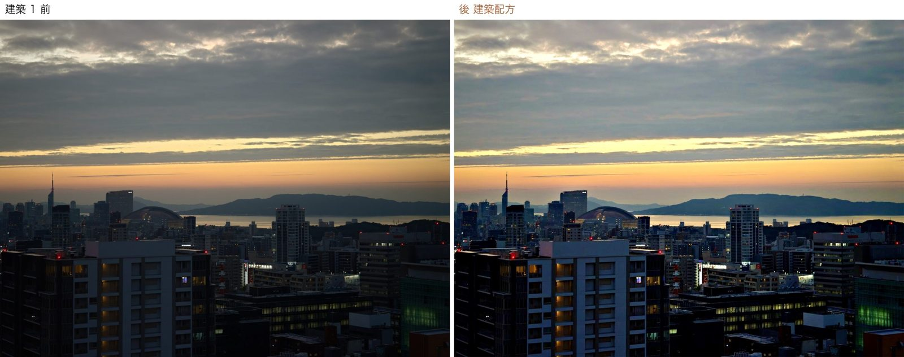
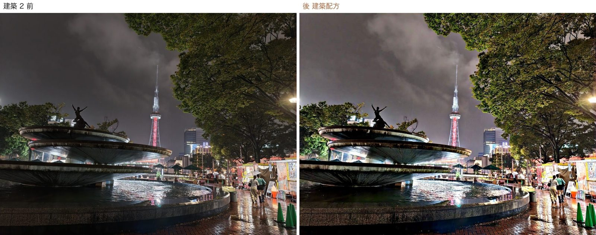
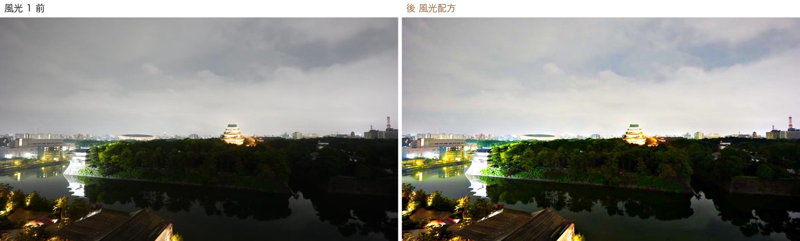
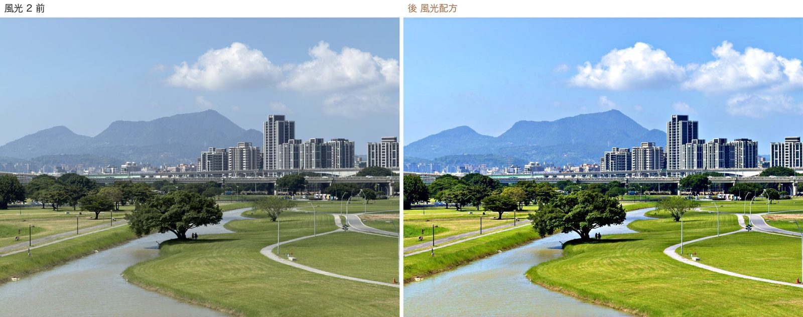
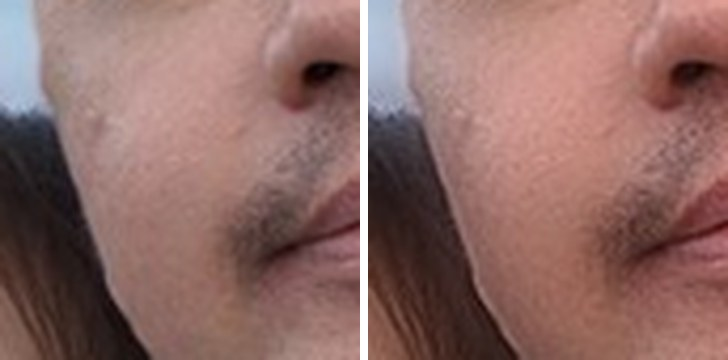
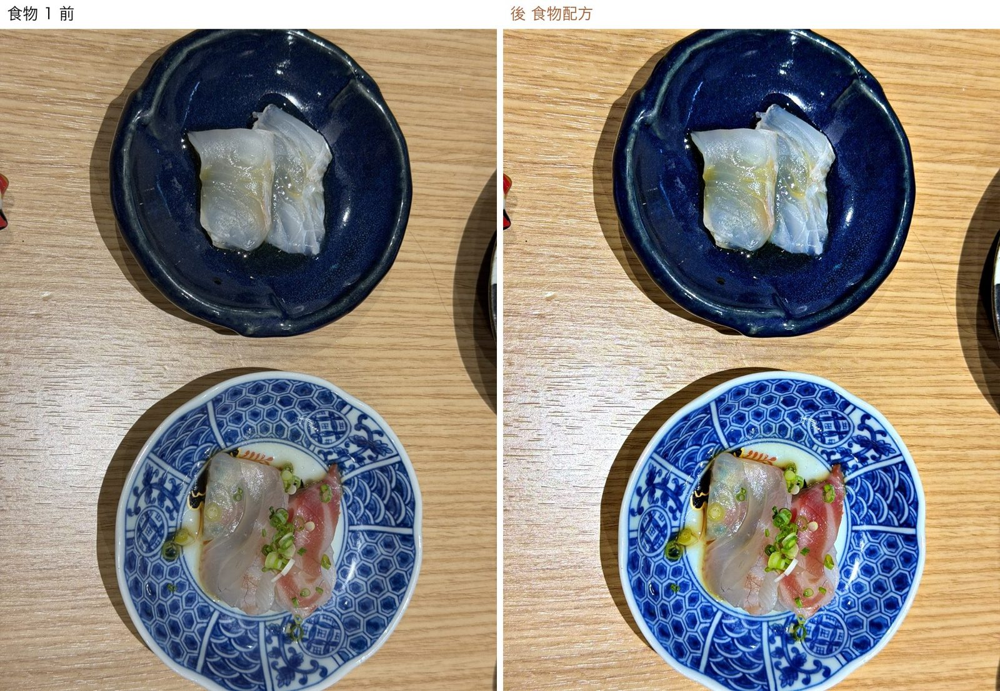
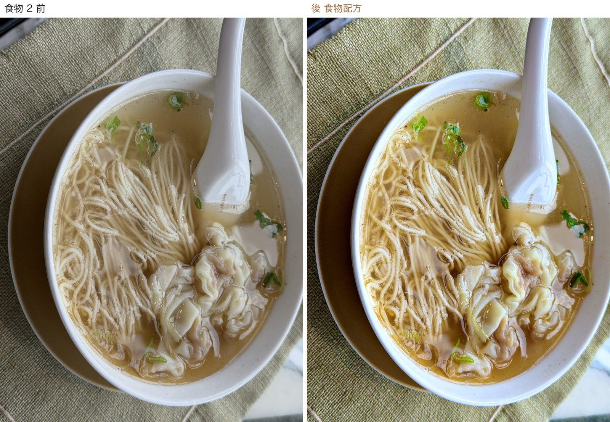
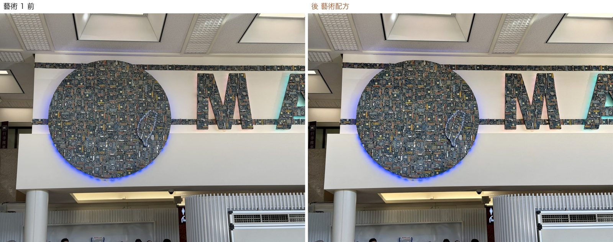
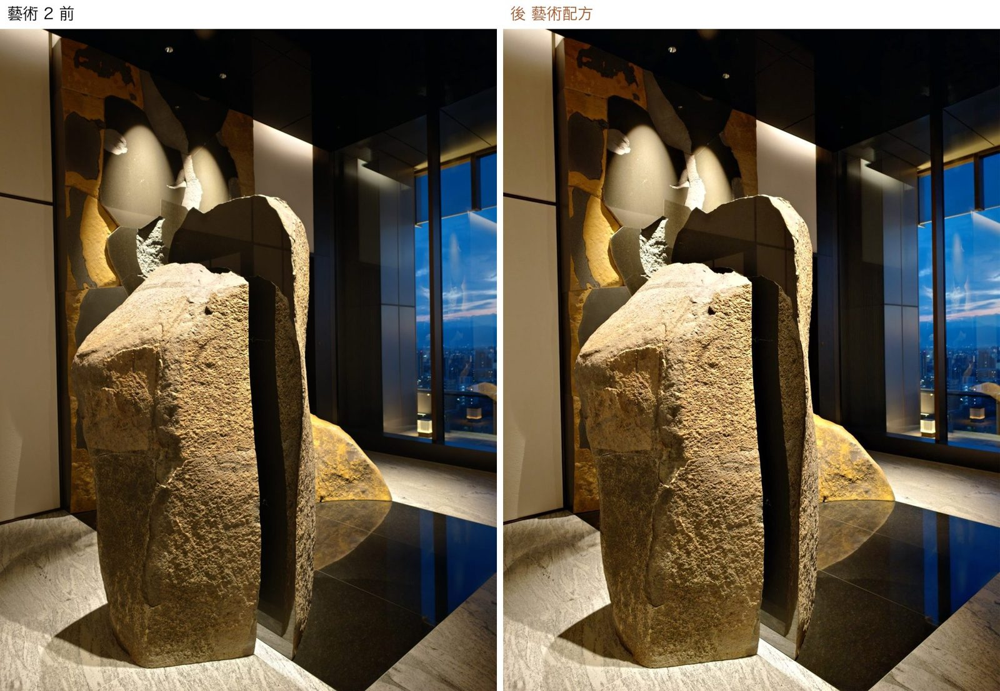

同一台相機拍出來的照片，建築、風光、人像、食物、藝術品要的修法不一樣。這一頁把五個主題各自的「配方」放在一起：自動引擎的參數、LR 預設對應、Photoshop 的動作與外掛、免費下載包、拍攝時就該注意的事。單一現行版，改配方只改這裡。
| 路 | 什麼時候 | 誰在修 | 主題怎麼對上 |
|---|---|---|---|
| ① 生活記事版 自動簡修 | lifeday 上站的每一張圖 | 自動引擎 LifedayEnhance（macOS 內建 Core Image＋Vision，本機、免費、0.2 秒／張） | 記事裡照片的分類 人像／風景／食物／創作 → 直接對到配方；沒分類的走「有臉美肌、沒臉清晰」 |
| ② 攝影師出片 | PhotoNB 那套：scene_build 歸檔 → LR | Lightroom 預設（寫進 XMP／DNG，匯入就套好） | 依色標／場景關鍵字選預設：紅＝人像、綠＝風景建築、黃＝折衷 |
| ③ to photoshop（場景） | 出片前想再修一層的場景（工序頁） | Photoshop 自動化：Camera Raw 讀 LR 調整＋主題動作（動作集 Lifeday）、Evoto、Luminar | James 在 LR 給色標：紅人像／黃人物／綠景物／藍建物／紫藝術，關鍵字 食物 |
| 主題 | 自動增強 | 美肌 | 清晰度 | 鮮豔 | 飽和 | 對比 | 色溫 | 陰影↑ | 亮部回收 |
|---|---|---|---|---|---|---|---|---|---|
| 🏛 建築 architecture | 85% | 30%（有臉才） | 45% | 0 | ×0.92 | ×1.08 | −120K 偏冷 | 5% | 有 |
| 🏞 風光 landscape | 90% | 40%（有臉才） | 35% | +15 | ×1.04 | ×1.04 | 0 | 12% | 強 |
| 👤 人像 portrait | 85% | 70% | 0 | +5 | ×1.00 | ×1.00 | +120K 微暖 | 8% | 微 |
| 🍜 食物 food | 85% | 40%（有臉才） | 20% | +20 | ×1.06 | ×1.02 | +250K 暖 | 10% | 微 |
| 🎨 藝術 art | 55% | 0 | 10% | 0 | ×1.00 | ×1.00 | 0 | 0 | 無 |
自動增強＝Apple「照片」App 的自動增強（臉部平衡／鮮豔度／色調曲線）混合比例。美肌＝頻率分離：只柔化膚色層，毛孔、髮絲、眼、唇原封不動。清晰度＝大半徑局部對比。
Robert_UrbanCool_v1（IG 建築線條系列用）＋ 鏡頭校正 ＋ 幾何校正「垂直」手動拉。
PS 動作／外掛Camera Raw 濾鏡（去朦朧＋清晰度）、幾何校正 Upright、Retouch4me Clean Backdrop（清路人雜物）、移除工具清電線。
拍攝提醒能站遠就站遠，少用超廣角仰拍；陰天比大太陽好修；夜景用 30 秒以內、ISO 壓低。


Robert_AT_P 自動曝光基準 → Robert_HarborDiary_v1（海港／水岸）；縮時走 LRTimelapse 那套（指南）。
PS 動作／外掛Camera Raw 自適應預設「天空」、Luminar Neo 換天空／Enhance AI、Nik Color Efex（Pro Contrast）。
拍攝提醒RAW 一定要留（亮部回收全靠它）；日出日落前後 20 分鐘；有偏光鏡就上。


Robert_Skin_MilkPink／CoolBlue（Med／Strong） 依膚色與場景；紅標人像出片走 Evoto（外部編輯器 round-trip）。
PS 動作／外掛頻率分離 + Dodge & Burn 動作（免費包見下）、Neural Filters 皮膚平滑、Retouch4me Heal／Skin Tone／Eye Brilliance、Portraiture 4。
拍攝提醒順光或窗邊側光；離背景遠一點；OPPO 開了機內美肌的照片引擎會掃到、不重複修。

JT_F_室內優化（James 自家）；白平衡用白盤點一下。
PS 動作／外掛Camera Raw 局部：把主菜圈起來加曝光＋清晰；Retouch4me Mattifier 反用（去湯面高光）。
拍攝提醒45° 俯角或正俯拍；關掉閃光；把手機拉近一點比事後裁好。


Robert_AT_Clear 全歸零 → 只用相機描述檔 Camera Standard，白平衡對白牆。
PS 動作／外掛幾何校正把畫框拉正；Camera Raw 去反光靠局部降亮部；不建議任何 AI 增強。
拍攝提醒正對作品、鏡頭與畫面平行；關閃光；有標籤牌一起拍一張（記事會用到）。


風格檔庫已有 489 支 cube（影片）＋ 576 支 xmp（照片預設，Camera Raw 直接吃），不用另外找；線上目錄見 風格目錄。
tools/bin/LifedayEnhance [--max 1280] [--q 0.8] --profile portrait|landscape|architecture|food|art|auto <in> <out> tools/bin/LifedayEnhance --list pairs.txt # 每行「輸入<TAB>輸出[<TAB>主題]」，整批一個行程 # lifeday_site.py 自動對應：人像→portrait 風景→landscape 食物→food 創作→art 其他→auto # 強度改了要全站重做：python3 lifeday_site.py --no-sync --rebuild-photos && ./lifeday_publish.sh
Cloudflare 對圖片快取 4 小時，重跑後手機最晚 4 小時看到新圖。原始碼 tools/bin/LifedayEnhance.swift，配方表在 PROFILES。